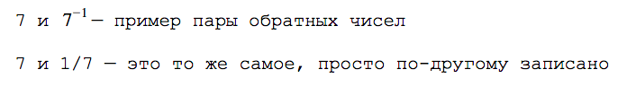
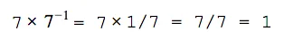
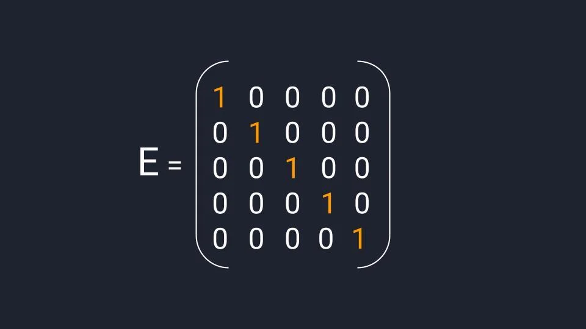
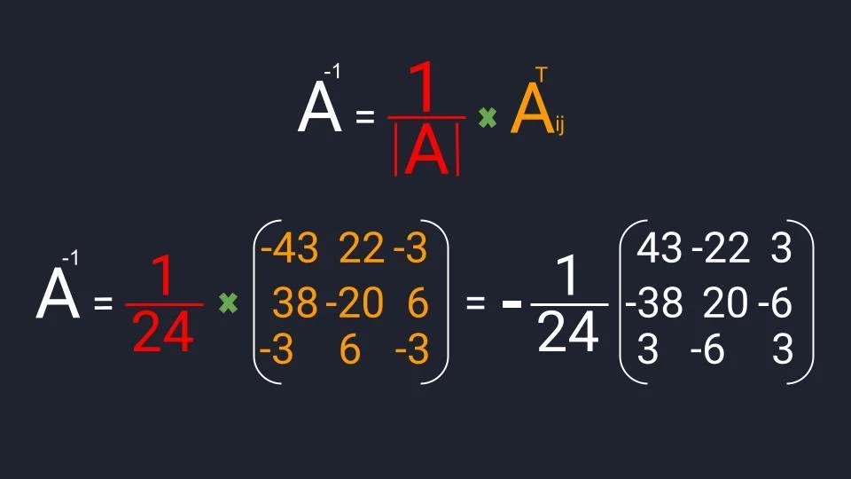

 

Обратное — это как?
В математике есть взаимно обратные числа. Они получаются так: вы берёте какое-то число, добавляете отрицательную степень и получаете обратное число:
Обратные числа при умножении друг на друга всегда дают единицу:
Обратная матрица
В линейной алгебре есть обратные матрицы. По свойствам они напоминают обратные числа: если обычную матрицу умножить на обратную к ней, получится единичная матрица.
Единичная матрица работает как единица с числами: если умножить любое число на единицу, получится исходное число; если умножить любую матрицу на единичную матрицу — получится исходная матрица
Единичная матрица состоит из единиц и нулей: на диагонали находятся единицы; остальные элементы — нули. Единичные матрицы не используются при расчёте обратных матриц, но без них не получится решать матричные уравнения.
Как рассчитать обратную матрицу
Для расчёта обратной матрицы нужно выполнить три действия. Пока что не обращайте внимание на термины:
- Разделить единицу на матричный определитель.
- Найти транспонированную матрицу алгебраических дополнений.
- Перемножить полученные значения.